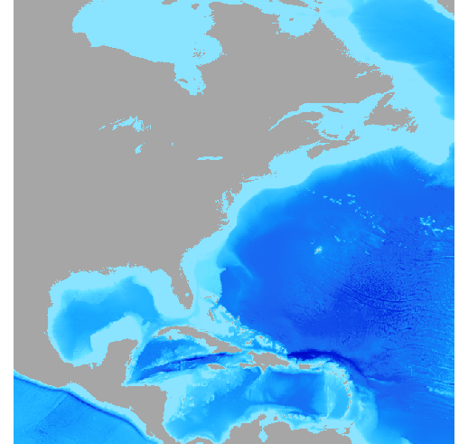
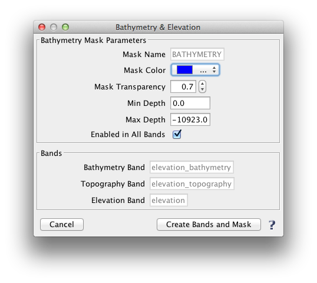

| Bathymetry & Elevation | |

|
The Bathymetry & Elevation tool creates a bathymetry mask based on user specified depth ranges. It also creates a bathymetry band, a topography band, and an elevation band. These bands are all in terms of elevation above sea-level, so they are primarily applicable to oceans, seas, bays, etc. The source data is at 2km resolution.
Layers -> Bathymetry & Elevation |
The following images illustrate bands and the bathymetry mask which can be created with this tool.
|
 Image 1. Bathymetry band |
 Image 2. Topography band |
 Image 3. Bathymetry band with bathymetry mask (in black) visible Depth Range: -5 m and -2000m |
The following image shows the "Bathymetry & Elevation" tool window:
|  |